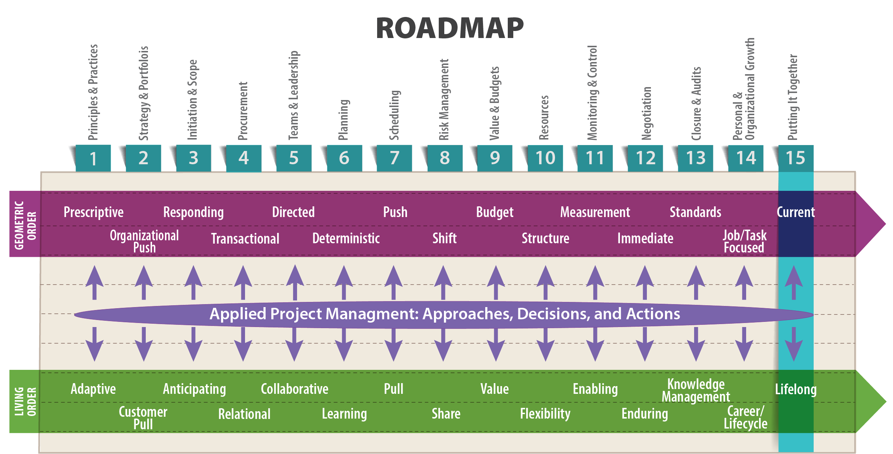
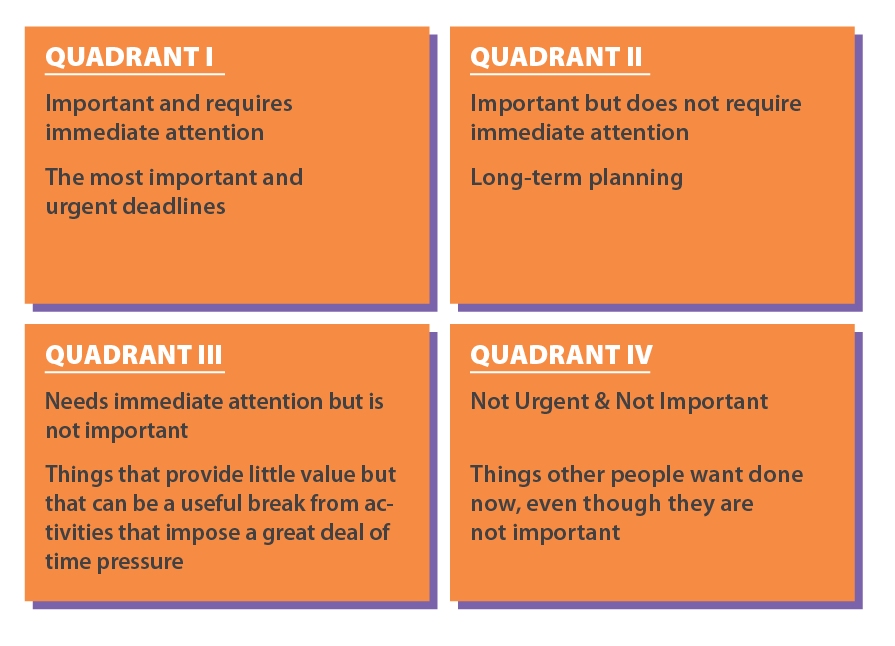

The problem is not that there are problems. The problem is expecting otherwise and thinking that having problems is a problem.
—Theodore Rubin,
American psychiatrist and author

Objectives
After reading this lesson, you will be able to
The Big Ideas In this Lesson
This last lesson is an opportunity for you to look back at your understanding of project management at the beginning of this book; assess how your abilities align with your new, expanded conception of project management; and develop a plan for incorporating these new ideas and practices into your work. In other words, this is an opportunity to plan for change. A short list of new practices for readers of this book might include
As you have read throughout this book, these are all important and effective ways of keeping projects on-track and headed toward success in the unpredictable, living-order conditions of the modern world. Hopefully, you have already begun changing your approach to project management to incorporate some or all of these practices. You might also hope to lead your entire organization toward some essential changes as well. So, let’s take some time to think about the nature of change and the mind-expanding possibilities of new ideas. It all starts with seeing the world differently.
In his novel 1984, George Orwell describes a dystopian state in which human thought is controlled by Newspeak, the state’s official language, which citizens are forced to adopt. Because Newspeak lacks words like “freedom” and “justice,” thoughts about such things gradually become “literally unthinkable, at least so far as thought is dependent on words…. Newspeak was designed not to extend but to diminish the range of thought, and this purpose was indirectly assisted by cutting the choice of words down to a minimum” (Orwell). By restricting the ability of citizens to think thoughts that might upset the current state of affairs, the government is able to prevent revolution from taking root.
In his novel, Orwell is making points about the nature of repressive political states. But he’s also commenting on the power of any organization to restrict the way its members think by controlling the official terminology and sanctioned procedures for getting things done. In any large organization, giving an honest assessment of any situation can be exceedingly difficult, especially when the organization itself wants you to see things differently. In an interview with the Harvard Business Review, James March, one of the seminal scholars and thinkers on organizational theory, describes the predicament of astute modern managers, who perceive uncertainty all around, but are compelled by the pressures of organizational thinking to blind themselves to that reality:
The rhetoric of management requires managers to pretend that things are clear, that everything is straightforward. Often, they know that managerial life is more ambiguous and contradictory than that, but they can’t say it. They see their role as relieving people of ambiguities and uncertainties. They need some way of speaking the rhetoric of managerial clarity while recognizing the reality of managerial confusion and ambivalence. (Coutu 2006)
In a collection of his lectures, James March explains that to avoid this kind of self-imposed blindness, managers need to combine their natural plumber’s tendency—the tendency to zero in on problems and fix them—with the poet’s bold, creative approach to the world:
There are two essential dimensions of leadership: “plumbing,” i.e., the capacity to apply known techniques effectively, and “poetry,” which draws on a leader’s great actions and identity and pushes him or her to explore unexpected avenues, discover interesting meanings, and approach life with enthusiasm.
The plumbing of leadership involves keeping watch over an organization’s efficiency in everyday tasks, such as making sure the toilets work and that there is somebody to answer the telephone. This requires competence, not only at the top but also throughout all the parts of the organization; a capacity to master the context (which supposes that the individuals demonstrating their competence are thoroughly familiar with the ins and outs of the organization); a capacity to take initiatives based on delegation and follow-up; a sense of community shared by all members of the organization, who feel they are “all in the same boat” and trust and help each other; and, finally, an unobtrusive method for coordination, with each person understanding his or her role sufficiently well to be able to integrate into the overall process and make constant adjustments to it….
Leadership also requires, however, the gifts of a poet, in order to find meaning in action and render life attractive. The formulation and dissemination of interesting interpretations of reality form the basis for constructive collective action…. Words allow us to forge visions, and poetic language, through its evocative power, allows us to say more than we know, to teach more than we understand. (March and Weil 2005)
Thinking like a poet opens the door to the kind of personal change that will make you a better project manager. At the same time, thinking like a poet will give you the ability to inspire change in your organization. As you’ll see in the next section, a poet’s ability to interpret events, and to tell other people what they mean, is extremely useful in living order, where unexpected events unfold every day, unforeseen by even the most carefully constructed project plan.
You Already Think Like a Poet
James March has suggested that managers could benefit from reading poetry, which forces readers to marshal their powers of interpretation, looking for multiple layers of meaning in any one word (Coutu 2006). But whether or not you are interested in reading poetry, you should at least be aware that living order is ultimately a poetic idea, developed by the French philosopher Henri Bergson. When he first used the term, in his book Creative Evolution, Bergson was talking about the artistic process, which appears chaotic from the outside, but can produce works of extraordinary order and complexity (1911). Living order is a complicated idea, and at first blush it doesn’t even make sense. How can order be alive? What does that mean? Hopefully, after fourteen lessons, you do have a sense of what it means. You probably even feel comfortable using the term “living order” to identify certain phenomena in your professional life. That is, you reinterpreted two English words—“living” and “order”—and, as a result, internalized a new understanding of the world. In other words, you have begun thinking like a poet.
As an engineer, you are probably inclined toward the plumbing tasks associated with leadership. After all, almost by definition, engineers like to fix things. And you might think that the poet part of the equation is something entirely new to you. But the work of Swedish researchers Ingalill Holmberg and Mats Tyrstrup suggests that employing a poet’s interpretive skills—that is, looking at a situation and telling other people what it means—is something good managers do every day. You probably have more experience at it than you think.
Holmberg and Tyrstrup developed their theory when studying everyday leadership—that is, the decisions and activities that take up the vast majority of a manager’s time. In interviews with managers at TECO, the Swedish international telecom company, they found that only 10% of projects were completed in the traditional, geometric way, with events unfolding according to plan. Another 20% are driven by a manager who saw himself or herself as heroic for solving unexpected problems and forcing the project to unfold as originally planned. The researchers noted that managers especially loved to describe a project as “a story of heroic feats.” They explain that
many managers tend to describe their efforts according to this model. They begin with a challenging problem (which, by the way, is much bigger than initially expected). A process follows that includes many difficult turns. Knotty problems arise, and at times everything looks bleak—very bleak indeed. But the competent manager has a basic agenda consisting of a number of stages to follow and steps to take. In hindsight, it can be claimed that the whole process has gone according to plan and a successful conclusion has been reached. (54)
Managers who describe their successes in this way tend to think leadership is largely a matter of knowing “today what should be done tomorrow in order to reach the desired results” (54). In other words, they see projects as intention-driven. They believe that a heroic manager with clearly defined intentions can make anything happen.
But according to Holmberg and Tyrstrup, managers who view themselves in this heroic light are deceiving themselves, because the vast majority of a manager’s time is spent on problems that nobody did or could expect. The researchers call these “Well then—what now?” situations. They argue that almost all of a manager’s time is spent trying to answer that question—and not because things were poorly planned at the outset, but because that’s just how things work in a complicated organizational setting. As much as heroically-inclined managers would like to believe that their own intentions are the most powerful force in any project, in reality projects are nearly always event-driven, with managers forced to respond to changing situations from day to day. “Either something unexpected happens, or what was expected to happen does not” (58).
As you turn your attention from one “Well then—what now?” situation to another, it’s easy to lose track of priorities. In particular, you might fail to leave time for the large-scale, sense-making thinking required to keep a project on track over the long term. In The 7 Habits of Highly Effective People, Stephen Covey recommends using a time management quadrant, like the one shown in Figure 15-1. Make a diagram like this, and then keep track of how you spend your time, writing each activity into the appropriate quadrant (Covey 1989).

People tend to spend most of their time on Quadrants I and III, neglecting Quadrant II. Thus, long term planning and sense-making (which are not urgent but very important) tend to fall by the wayside. For some suggestions on how to use a time management quadrant to eliminate pointless, Quadrant IV tasks from your work life in order to focus more on the essential Quadrant II tasks, see this helpful article: https://www.usgs.gov/media/files/time-management-grid.
Holmberg and Tyrstrup describe a “Well then—what now?” project as follows:
You find yourself in a problematic situation, working hard and wrestling with the issues as they appear, only to find you are constantly trying to grasp the situation. It is not at all certain how you got where you are or what the situation means. It is extremely difficult to assess how the situation fits with the intentions articulated a few days, a week, or a month ago. It is hard to tell what has been completed, what is still going on, or what is yet to be accomplished. People are constantly at your throat, asking for different instructions or directions. People higher up in the hierarchy, those lower down, and even those at the same level want information and reports that give the results of decisions taken and activities performed. One event seems to give rise to another according to a logic that is anything but obvious. As a manager, you are tired and need a break to go through your papers, emails, the heaps of files, and the phone messages in order to sort out your thoughts and feelings. (55)
In a situation like this, the manager’s main job is to interpret what’s going on—that is, make sense of the situation:
In each case, the manager had to interpret what had already happened in order to formulate what the next step should be. What was the significance of what had or hadn’t happened? How might these events and non-events be best explained, and what are their implications? (59)
After formulating an interpretation, managers must come up with a solution, circling back to revise their interpretation of the situation as necessary.
This brings us back to March’s idea that a leader is partly a plumber and partly a poet. A “Well then—what now?” problem can only be solved by a manager with a poet’s ability to interpret the situation, to see into the heart of the matter and explain to everyone else what’s going on. Then, acting like a plumber, the manager needs to figure out a way to solve the problem. Often, solving the problem also requires quite a bit of poetic creativity and vision.
Holmberg and Tyrstrup conclude their study with some practical suggestions designed to nudge large organizations away from the assumption that unexpected events can be prevented by more detailed planning, which can be extremely time-consuming and costly. Instead, they argue, organizations should focus on hiring managers who can deal with the unexpected. Their research implies that organizations should focus on “selecting managers who are prepared to give up unilateral control and instead to rely on the creativity inspired by improvised actions” (65). Likewise, management training, they argue, should focus on helping managers come up with creative solutions to the question “Well then—what now?”
As you look to your future as a technical project manager, be alert to your own tendency to see yourself as a hero in the midst of chaos. Instead, remember that resolving “Well then—what now?” situations is the main job of a project manager. You need to be able to deal with them creatively and with as little drama as possible.
Becoming an Expert Technical Project Manager: the 10,000 Hour Rule, Revised
You might have heard people talk about the 10,000 hours rule. As popularized by Malcolm Gladwell in his book Outliers, the rule holds that it takes 10,000 hours of practice to become an expert at anything, including project management. But according to Anders Ericsson, the psychologist whose research inspired the maxim, simply doing something over and over won’t lead to true expertise. Instead, you need to actively correct your performance to achieve real excellence. Maria Popova summarizes his findings:
The secret to continued improvement, it turns out, isn’t the amount of time invested but the quality of that time. It sounds simple and obvious enough, and yet so much of both our formal education and the informal ways in which we go about pursuing success in skill-based fields is built around the premise of sheer time investment. Instead, the factor Ericsson and other psychologists have identified as the main predictor of success is deliberate practice—persistent training to which you give your full concentration rather than just your time, often guided by a skilled expert, coach, or mentor. (n.d.)
So, to become an expert technical project manager, you need to invest time in constant learning and training. But you need to do this with an active attention toward self-improvement. To avoid “ceasing to grow and stalling at proficiency level … you need to continually shift away from autopilot and back into active, corrective attention” (Popova).
You can read Popova’s excellent summary of the latest research on the 10,000 hours rule here: https://www.brainpickings.org/2014/01/22/daniel-goleman-focus-10000-hours-myth/. And while you’re at it, consider subscribing to her email newsletter, which explores a huge variety of topics related to culture, history, and art. It’s a wonderful way to learn about issues that lie beyond the boundaries of the engineering world, making it an excellent professional development resource. Reading regularly will ensure that you’re familiar with all the big topics currently circulating in the culture. You can subscribe here: https://www.brainpickings.org/newsletter/
In this book, you’ve learned about the importance of planning to ensure a technical project’s success. The same is true of your career. Unfortunately, the event-driven nature of project management, which can pull your attention in a dozen different directions at once, can leave little time and energy for planning and acting on your long-term career goals. As a result, some project managers end up moving from one job to another with no real plan in mind. In other words, they fall into the trap of tolerating an event-driven series of positions at various organizations, rather than insisting on an intention-driven, goal-oriented career. The first step in taking control of your career is creating a professional development plan(PDP), which is a document that describes
Figure 15-2: Project Management Self-Assessment
Download Figure 15-2 in PDF form
To create a meaningful development plan, you also need to engage a trusted mentor and perhaps a few valued colleagues. Connect with people who are willing to share experiences with you, who understand the big picture, and who can give you honest assessments of your strengths and weaknesses. Definitely take advantage of any formal mentorship programs available through your organization or in your field. However, according to Terry Little in Becoming a Project Manager, you are likely to get the best results through more informal mentoring arrangements with willing senior employees. It’s possible a senior manager who takes mentoring seriously will approach you about establishing a mentor/mentee relationship, but if that doesn’t happen, don’t be afraid to seek out your own mentors. But what makes a good mentoring relationship? According to Little, the following principles are a good foundation:
No matter how much work you and your mentor put into your professional development plan, the plan is only useful if you actually monitor your progress in achieving your goals and take the time to update the plan throughout your career. Whereas projects are team efforts involving collaboration among many parties, your professional development is entirely your responsibility. In an article for Forbes, Chrissy Scivicque emphasizes that while your organization’s human resources department might help you create a plan, executing it successfully is really up to you:
Your professional development is not the responsibility of anyone but you. Not your company, not your boss, not even your coach. Just you.
Some companies try to help with the process by helping employees create professional development plans (PDP) as part of the performance review process. While it’s a nice gesture, it simply isn’t very useful for the vast majority of employees.
In my experience, I’ve found that a PDP created at the behest of an employer is often an exercise for management, not the employee. In fact, if the employee will later be judged on that criteria, he or she actually feels encouraged to aim low so as not to be set up for future failure. For those who happen to have bigger goals that don’t involve working for the company, the PDP is pretty meaningless. The employee ends up playing a game, telling the manager what he wants to hear and not using the plan to facilitate real, desired professional growth.
Even if your company helps you develop a plan, it’s always a smart idea to create one of your own in private. This will help you identify and take action on growing the skills needed to achieve your true long-term career goals, whether or not they involve your current company. (2011)
In her article, Scivicque also emphasizes that a professional development plan is only useful if you revise it regularly to reflect new opportunities and challenges, as well as your own changing aspirations. You can read her complete article here: http://www.forbes.com/sites/work-in-progress/2011/06/21/creating-your-professional-development-plan-3-surprising-truths/#5cd14a4627bb.
In their book Becoming a Project Leader, Alexander Laufer, Terry Little, Jeffrey Russell, and Bruce Maas provide real-life case studies of people struggling with and growing into the role of project manager. They explain that “the large sample of project managers we studied did not become successful due to intensive and formal classroom education. Rather, the primary means for their development was on-the-job learning” (109). According to their research, the three most important avenues for this vital form of learning are pursuing challenging tasks to gain experience, working with a mentor, and learning through communities of practice. “Project managers develop as successful leaders by employing a variety of practices which are from bottom to top (the project manager tackling challenging tasks and affecting the organization), top to bottom (mentoring), and across the organization (community of practice)…. If an organization is to grow and weather the inevitable ups and downs it will face in a dynamic environment, professional development is essential” (127).
One of the great benefits of taking part in a community of practice is that it offers a low-pressure setting in which people can talk about their work, usually in the form of stories. The ability of stories to transfer knowledge and wisdom among people cannot be overemphasized. “People love to read stories because they attract and captivate, can convey a rich message in a non-threatening manner, and are memorable. Stories are thus the most effective learning tool at our disposal, especially in situations where the prospective learner suffers from a lack of time—which is the case for most project managers” (Laufer et al. 2018, 121-122).
All of these professional development tactics draw on the 70/20/10 model for learning and development, which holds that 70% of learning comes from challenging assignments, 20% comes from relationships with coworkers including mentors and communities of practice, and 10% from formal training. You can learn more about the 70/20/10 model here: https://trainingindustry.com/wiki/content-development/the-702010-model-for-learning-and-development/.
One important part of planning for your professional development is keeping an eye on trends that will shape technical project management in the coming years. Technological advances, expanding globalization, and new communication and data systems will all change how technical project managers do their jobs. Here’s a summary of emerging trends, along with links for more information:
Other issues that will continue to have a huge effect on technical project management in the coming years include
This set of practical tips summarizes the advice you’ve read in earlier lessons. To help promote an understanding of the role of geometric and living order in your organization’s projects, consider printing this list and posting it somewhere where your colleagues and project stakeholders can easily read it. And be ready to discuss these ideas with anyone who asks about them.
Finally, here are some concluding practical tips on management and leadership, adapted from the work of Alexander Laufer, whose book Mastering the Leadership Role in Project Management (2012) has provided a wealth of inspiration for these lessons.
APPEL News Staff. 2007. “What’s Ahead for Project Management: A Roundtable Discussion with PMI.” ASK OCE 2 (2). https://appel.nasa.gov/2010/02/27/ao_2-2_f_ahead-html/.
Bergson, Henri. 1911. “Creative Evolution.” Project Gutenberg. Accessed June 15, 2018. http://www.gutenberg.org/files/26163/26163-h/26163-h.htm.
Burger, Rachel. 2017. “Business Agile and the Future of Project Management.” Capterra Project Management Blog. August 14. https://blog.capterra.com/business-agile-and-the-future-of-project-management/.
—. 2017. “The 5 Biggest Project Management Trends Shaping 2018.” Capterra Project Management Blog. November 14. https://blog.capterra.com/the-5-biggest-project-management-trends-shaping-2018/.
Coutu, Diane. 2006. “Ideas as Art [an interview with James March].” Harvard Business Review, October. https://hbr.org/2006/10/ideas-as-art.
Covey, Stephen R. 1989. The 7 Habits of Highly Effective People. New York: Free Press.
Gothelf, Jeff. 2014. “Bring Agile to the Whole Organization.” Harvard Business Review, November 14. https://hbr.org/2014/11/bring-agile-to-the-whole-organization.
Holmberg, Ingalill, and Mats Tyrstrup. 2012. “Chapter 3: Managerial Leadership as Event-Driven Imrovisation.” In The Work of Managers: Towards a Theory of Management, by Stefan Tengblad, 47-68. Oxford: Oxford University Press.
Laufer, Alexander. 2012. Mastering the Leadership Role in Project Management: Practices that Deliver Remarkable Results. Upper Saddle River: FT Press.
Laufer, Alexander, Terry Little, Jeffrey Russell, and Bruce Maas. 2018. Becoming a Project Leader: Blending Planning, Agility, Resilience, and Collaboration to Deliver Successful Projects. New York: Palgrave Macmillan.
March, James G., and Thierry Weil. 2005. On Leadership. Malden, MA: Blackwell Publishing.
Orwell, George. 1949. “1984: Appendix, The Principles of Newspeak.” George Orwell. Accessed December 11, 2016. http://orwell.ru/library/novels/1984/english/en_app.
Popova, Maria. n.d. “Debunking the Myth of the 10,000-Hours Rule: What it actually Takes to Reach Genius-Level Excellence.” BrainPickings. Accessed December 22, 2016. https://www.brainpickings.org/2014/01/22/daniel-goleman-focus-10000-hours-myth/.
Rubenstone, Jeff. 2016. “Mixing Reality on Site: Hologram Headsets Put 3D Models Front and Center.” Engineering News-Record, November 28/December 5: 20-24.
Scivicque, Chrissy. 2011. “Creating Your Professional Development Plan: 3 Surprising Truths.” Forbes, July 21. http://www.forbes.com/sites/work-in-progress/2011/06/21/creating-your-professional-development-plan-3-surprising-truths/#5cd14a4627bb.
TechTarget. n.d. “internet of things (IoT).” TechTarget. Accessed 17 2018, July. https://internetofthingsagenda.techtarget.com/definition/Internet-of-Things-IoT.
The Levin Institute. n.d. “What Is Globalization?” Globalization 101. Accessed July 17, 2018. http://www.globalization101.org/what-is-globalization/.
Wiegand, John. 2016. “Viewpoint: Construction Project Delivery, Dispelling Lean Myths.” Engineering News-Record, November 15.